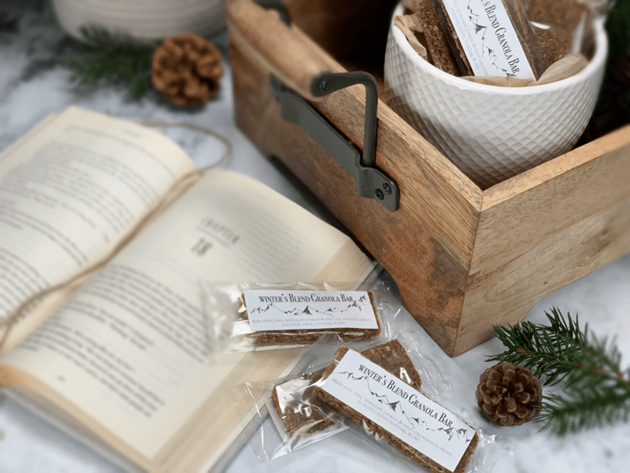
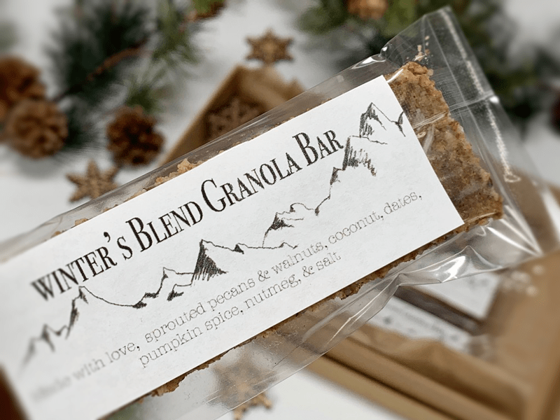
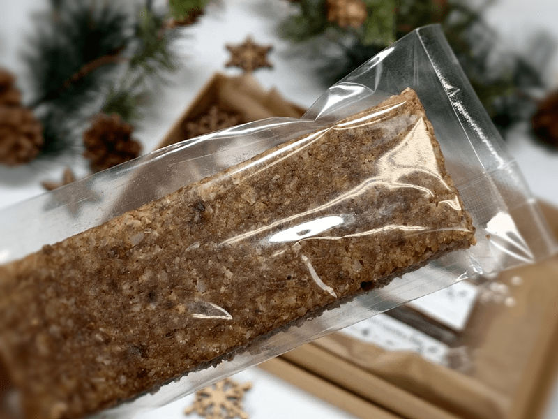

Winter’s Blend Granola Bar
A couple of months ago, I designed granola called Winter’s Blend, and it became a huge hit around here. I bet you that I have made at least fifteen batches so far! Eight batches just got made yesterday. And as usual, I can’t leave a recipe alone, as is, I always have to tinker around with it. Partly because it’s just fun, but also because I like to show you how easy it is to take one recipe and create many recipes from it. If you missed the granola recipe (here) is a link to it.

For instance, with this recipe, I have made chunky granola, I have also processed it down to a porridge/muesli texture for cereal, and now I have made bars from it. When I made a cereal/granola from it, I replace the dates with maple syrup. I choose dates as the primary sweetener because they also work as a binder to help hold everything together.
What we love about these bars… well the list goes like this – they are salty-sweet, have the perfect hint of warming spices in them, they are chewy, they are mildly sweetened with fiber-packed Medjool dates, and they are just flat out yummy.
For Christmas this year, I created toolbox gift “baskets,” and these bars snuggled right in perfectly. I will share a picture below. I found the clear bags at Michael’s Craft Store. After I slide the bar in, I trimmed the bag down to the appropriate size. I have a heat sealer since we manufacture a shelf-stable product called Monkey Brittle. I realize that you most likely won’t have one of those, but that’s ok. Just fold the end over and secure it with tape.
Whether you are giving these as gifts or just making them for your own personal enjoyment… you can be creative on their size, shape, and however, you decide to package them. Regardless of your method, I do recommend wrapping each one individually to retain freshness and the ease of grab-and-go. I hope you enjoy these delicious and nutritious bars. blessings, amie sue
 Ingredients:
Ingredients:
Yields: 18 bars
- 2 cups (245 g) pecans, soaked
- 2 cups (100 g) unsweetened, dried coconut flakes
- 1 cup (106 g) walnuts, soaked
- 1/2-1 tsp (3-6 g) Himalayan salt
- 1 Tbsp (10 g) Pumpkin Spice
- 1/2 tsp (2 g) ground nutmeg
- 1 cup (130 g) soft Medjool pitted dates
- 1/4 cup (60 g) water, if needed
Preparation:
- In the large food processor bowl, fitted with the “S” blade, add the pecans, coconut, walnuts, salt, pumpkin spice, and nutmeg. Pulse a few times to disperse the spices.
- If you already have nuts that have been soaked and dehydrated (just waiting to be used), you don’t need to rehydrate them. I always have my nuts and seeds presoaked and dehydrated, so that is what I used.
- Remove the lid and add the dates.
- Make sure that ALL pits have removed. Double… triple check. It takes ONE pit to ruin a batch.
- Inspect all dates as well. After removing the pit, check the insides of the date for any mold or critters. I don’t mean to gross you out; it’s just the facts of life.
- If the dates are really dry, it will best to soak them in warm water, so they blend more evenly. Be sure to hand squeeze any excess water from them before adding.
- If you used dry pecans and walnuts, you would most likely need to add the water to create the right texture. If you are using just soaked nuts, don’t add the water and see how it holds together. I didn’t want big chunks in these granola bars, so I blended it into a smoother texture.
- Line the dehydrator sheet with a nonstick sheet and place the batter in the center. Place a sheet of plastic wrap over the top and with a rolling pin, roll out to roughly 1/4″ thick. You can control how thick or thin you want it.
- Square up the edges and score the bars into desired sizes.
- Dehydrate at 145 degrees (F) for 1 hour, then reduce to 115 degrees (F) for roughly 10 hours. Again, you can control how moist you wish for them to be.
- I cut some into thin sticks for Bob because he wanted more of the surface to be firmer.
- These bars won’t be crunchy… they will hold shape and will be chewy.
- Storage
- Store on the counter for 5-7 days in a sealed container.
- Store in the fridge for up to 14 days.
- Store in the freezer for up to 1 month.
Culinary Explanations:
- Why do I start the dehydrator at 145 degrees (F)? Click (here) to learn the reason behind this.
- When working with fresh ingredients, it is essential to taste test as you build a recipe. Learn why (here).
- Don’t own a dehydrator? Learn how to use your oven (here). I do, however honestly believe that it is a worthwhile investment. Click (here) to learn what I use.



© AmieSue.com